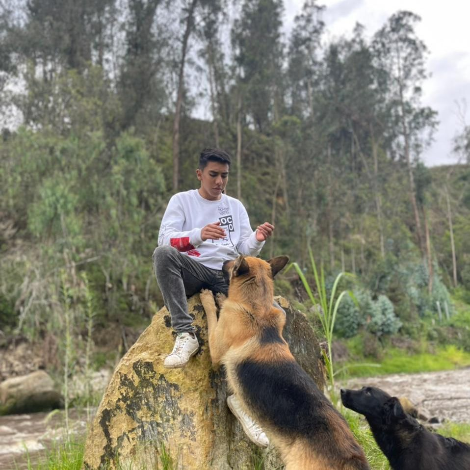

Oscar Arias
Estudiante de IngenierÃa de Sistemas
Apasionado por el desarrollo web, bases de datos y la programación competitiva.
Habilidades
- 💻 Programación en Python, Java y C++
- 🌠Desarrollo web con HTML, CSS y JavaScript
- 🗄️ Manejo de bases de datos (MySQL, PostgreSQL)
- 📊 Análisis de datos y algoritmos
- 🔧 Control de versiones con Git y GitHub
Proyectos
- Gestor de Tareas: Aplicación web para organizar tareas personales.
- Sistema de Biblioteca: Proyecto académico en Java con conexión a base de datos.
- Competencias de Programación: Resolución de problemas algorÃtmicos en equipo.